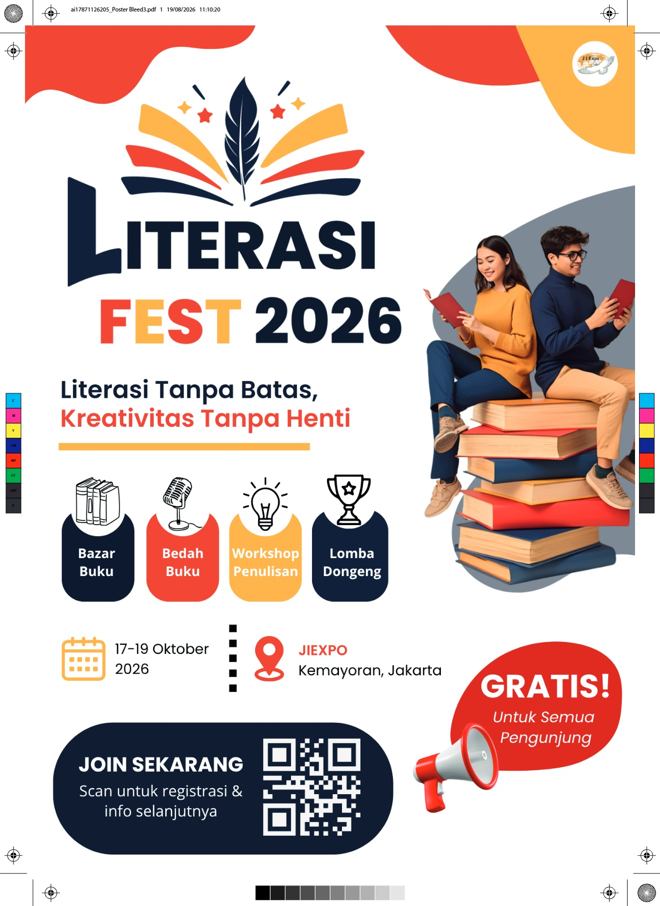
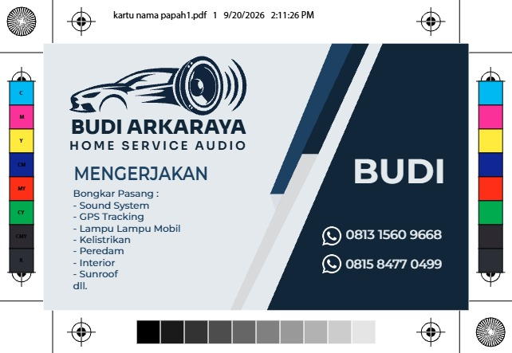
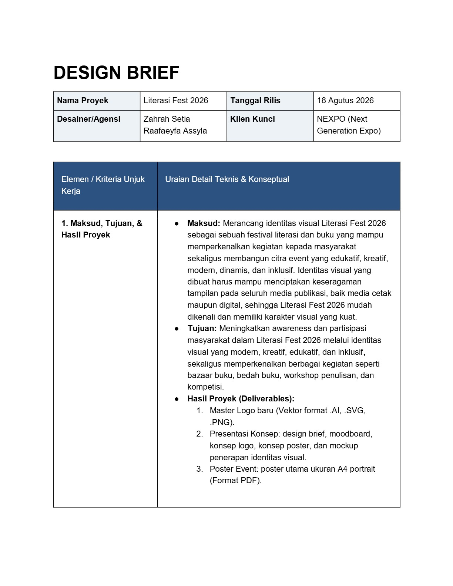
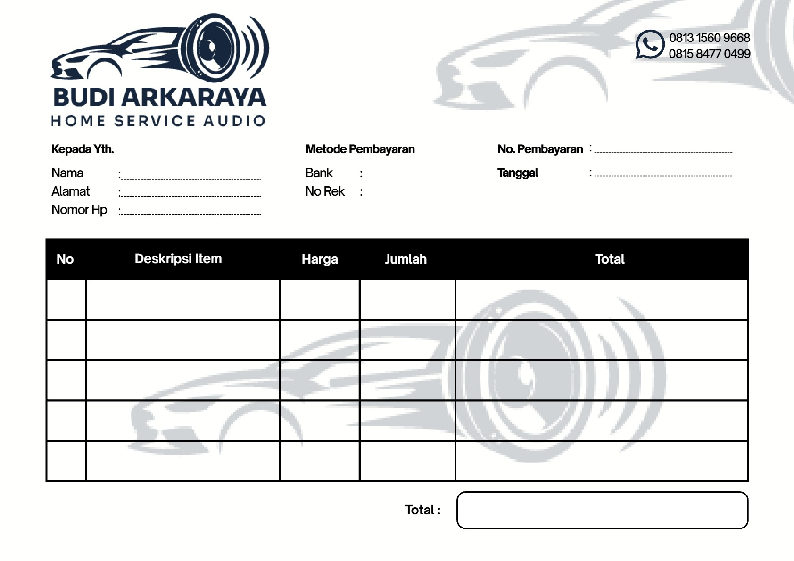
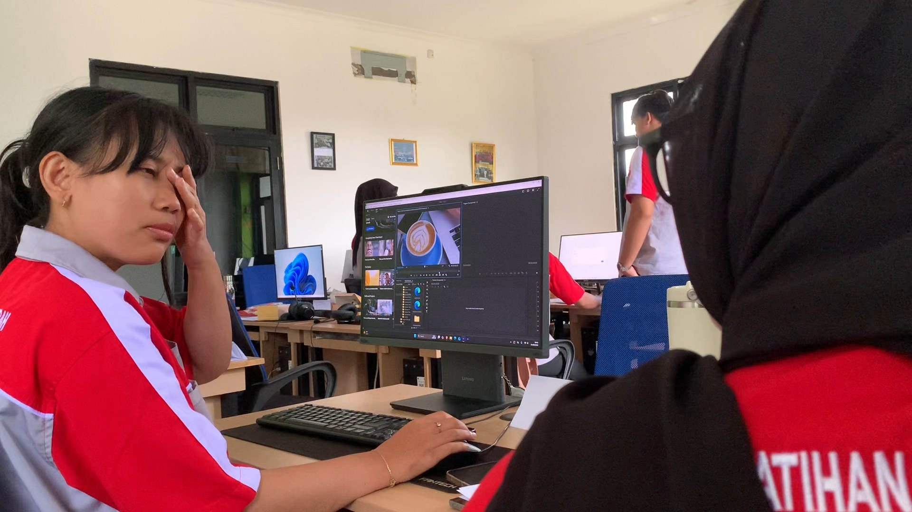
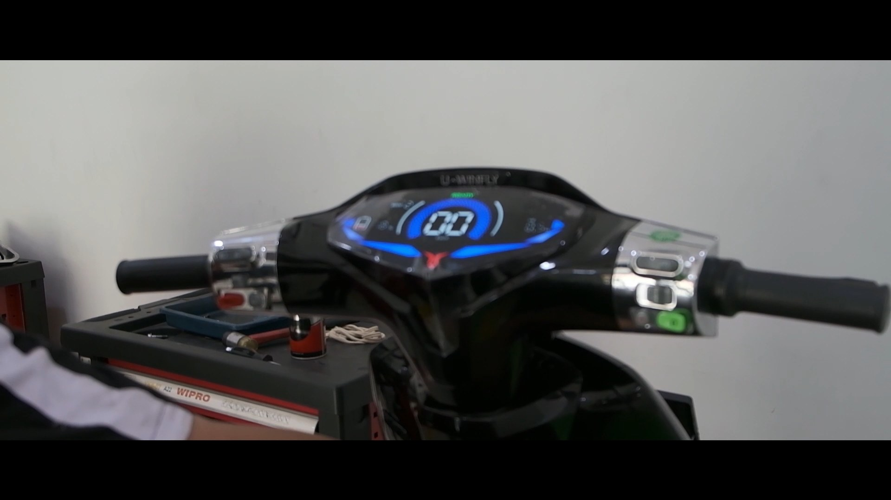
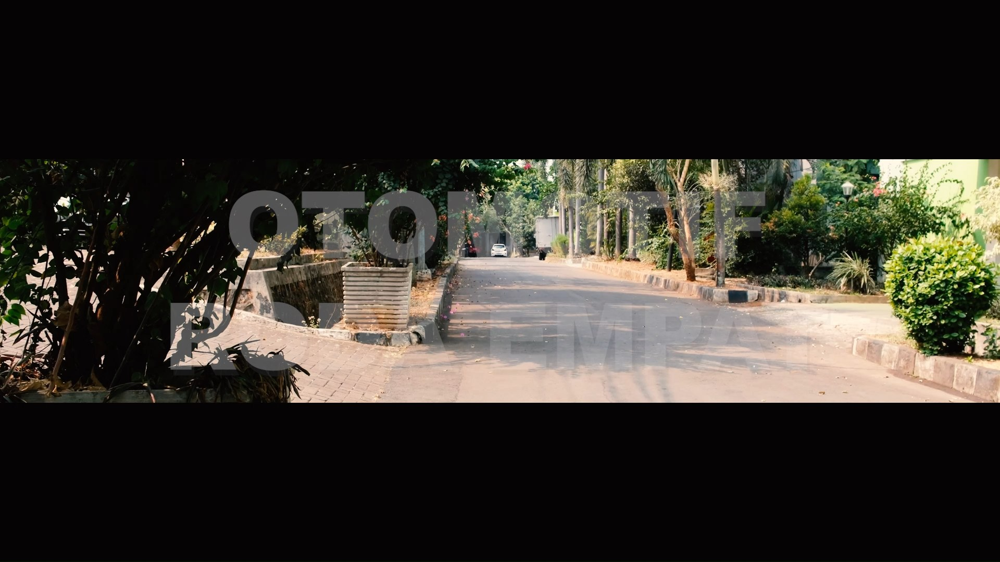
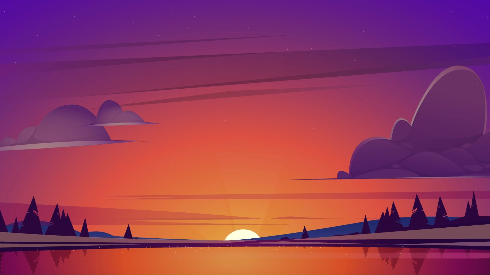

SELECTED PROJECTS
Exploring different dimensions of creativity
Web Development Projects
Proyek web development sedang dalam proses kurasi & pengembangan. Segera hadir karya website interaktif, modern, dan responsif!

Poster Literasi Fest 2026
Desain poster promosi event festival literasi nasional di JIEXPO Kemayoran dengan tipografi modern, tata letak dinamis, dan palet warna festival yang atraktif.

Backdrop Pelepasan Siswa SD Tadika Puri
Desain panggung wisuda dan backdrop pelepasan siswa/i kelas VI SD Tadika Puri bertema megah tirai panggung merah, aksen wayang emas, dan ilustrasi wisudawan ceria.

Kartu Nama Budi Arkaraya Audio
Desain kartu nama bisnis spesialis audio mobil & aksesoris kendaraan dengan logo emblem vektor modern, hierarki informasi kontak presisi, dan garis potong cetak.

Design Brief Literasi Fest 2026
Dokumen perencanaan konseptual identitas visual festival literasi untuk klien NEXPO. Berisi analisis audiens sasaran, standar teknis A4 art paper, dan core message.

Nota Pembayaran Budi Arkaraya
Desain lembar invoice transaksi resmi ukuran A4 dengan watermark logo otomotif, penataan tabel item rapi, dan format profesional untuk operasional bisnis.

Short Movie: Coffee Dream
Dalam proyek short film ini, saya berperan sebagai salah satu talent yang terlibat dalam proses pembuatan video. Selain itu, saya turut berkontribusi dalam proses editing, khususnya pada bagian opening dan closing, untuk menciptakan tampilan video yang menarik serta memberikan kesan yang kuat bagi penonton.

Motor Listrik (MOLIS) Showcase
Video commercial dan dokumentasi sinematik seputar kendaraan motor listrik modern dengan ritme editing dinamis.

Otomotif Cinematic Reel
Video teaser sinematik kejuruan otomotif dengan rasio widescreen, tipografi modern, dan grading visual tajam.

Sun & Scenery Animation
Animasi motion graphic 2D pemandangan danau saat matahari terbit dan terbenam dengan gradasi langit kosmik yang memukau.
BNSP Desain Grafis
Sertifikasi kompetensi nasional bidang desain grafis.
Peserta Terbaik PPKD
Sertifikat penghargaan peserta terbaik pelatihan PPKD program DKV.
Sertifikat UKBI
Uji Kemahiran Berbahasa Indonesia — sertifikat resmi dari Badan Bahasa.
Sertifikat Pelatihan DKV
Sertifikat pelatihan dari PPKD Jakarta Timur Program DKV untuk Design Grafis
Sertifikat Pelatihan DKV
Sertifikat pelatihan dari PPKD Jakarta Timur Program DKV untuk Video Editing